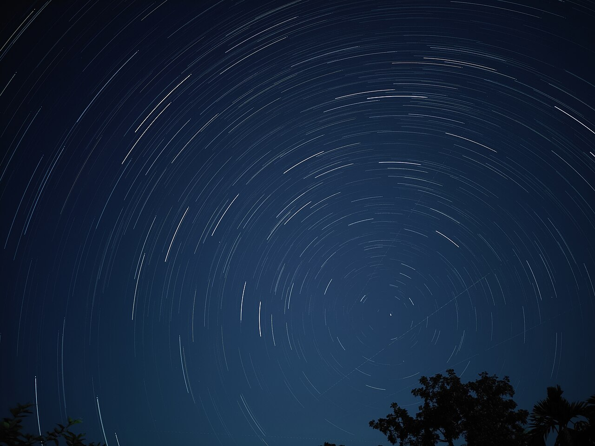
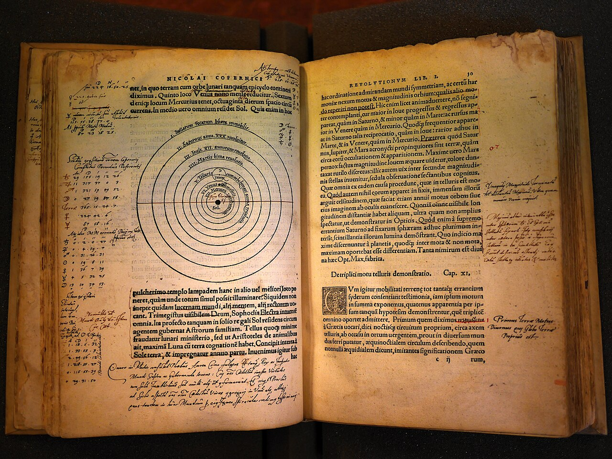
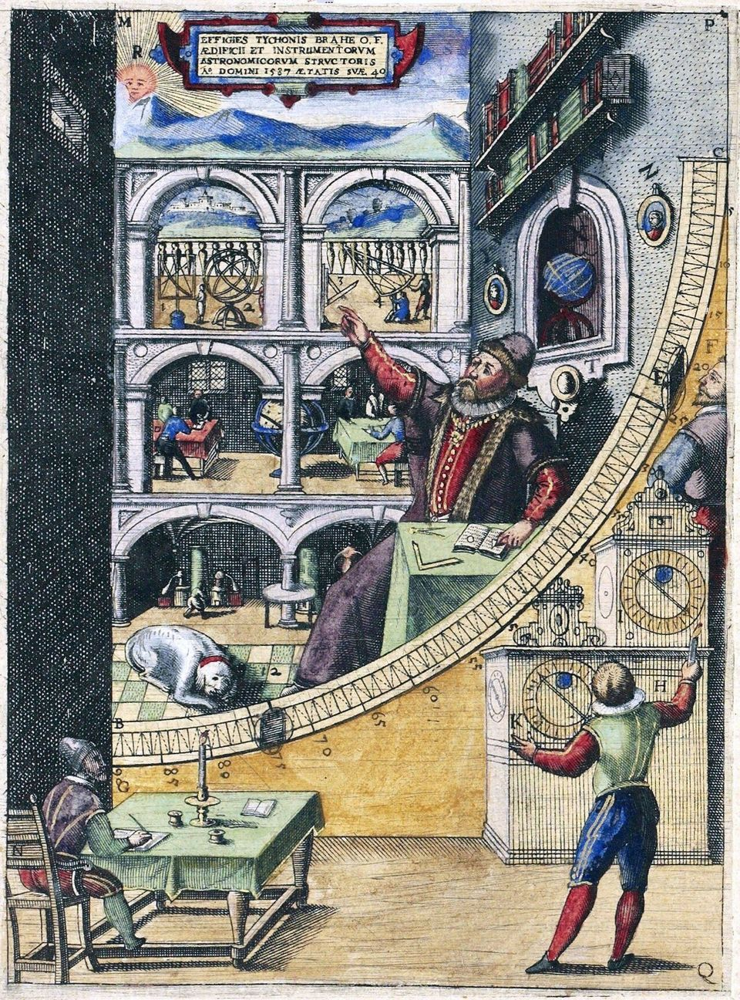
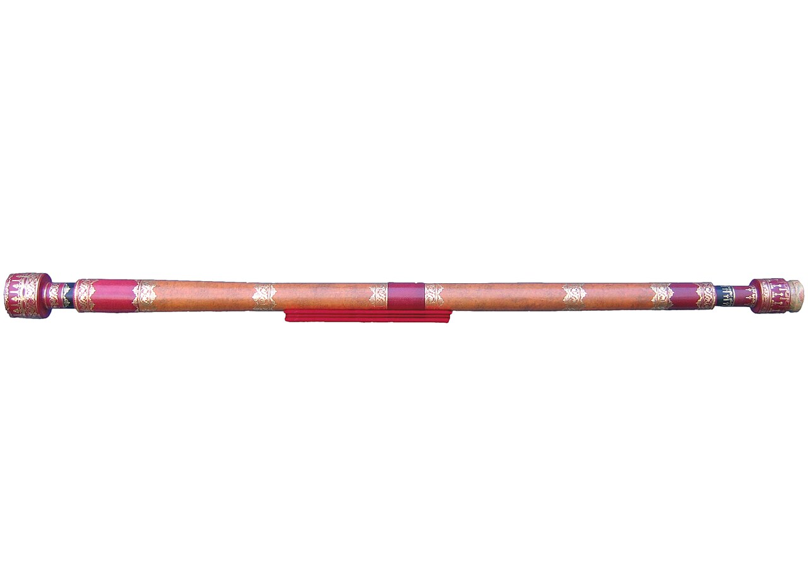
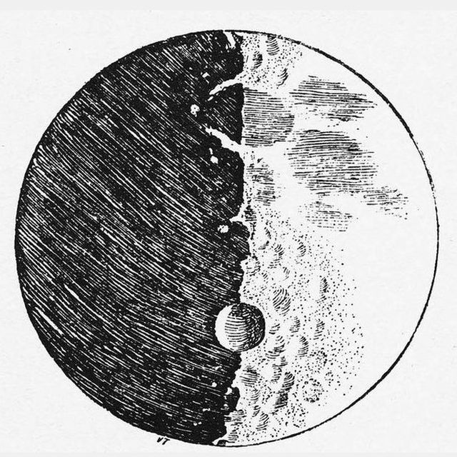
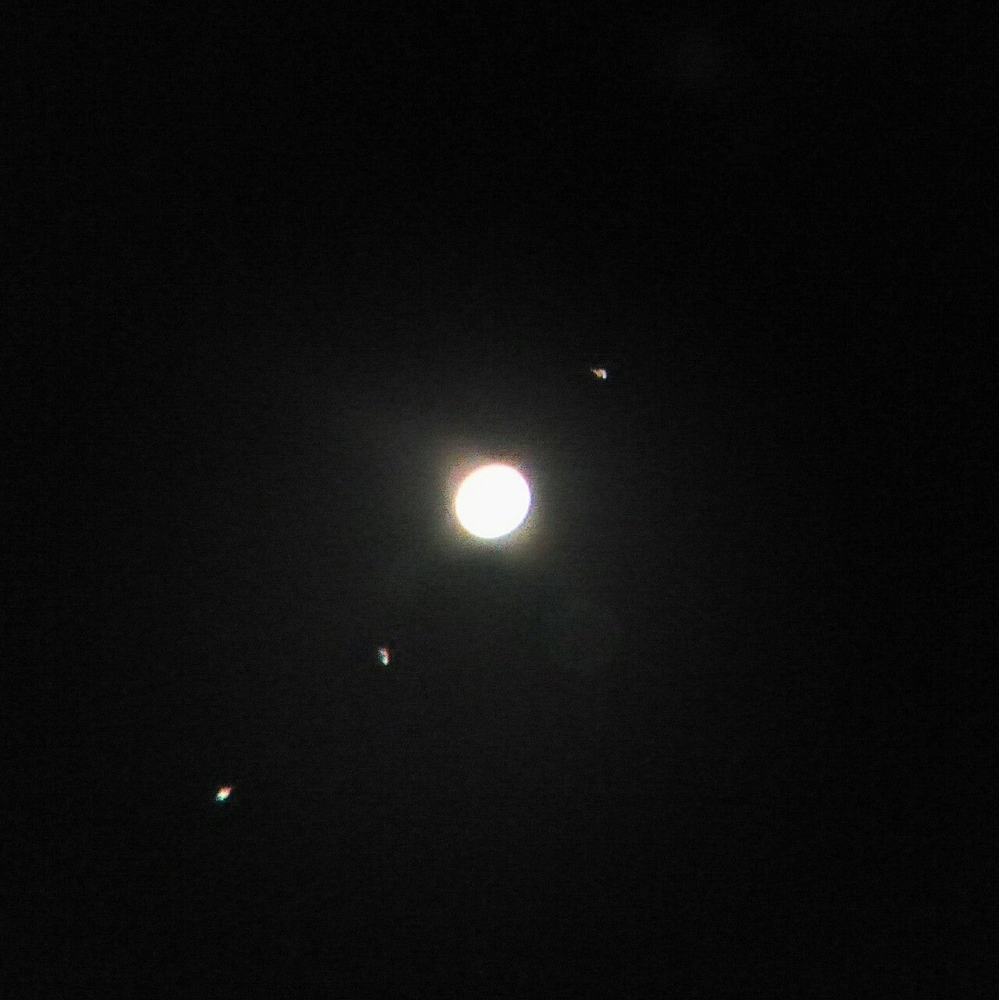
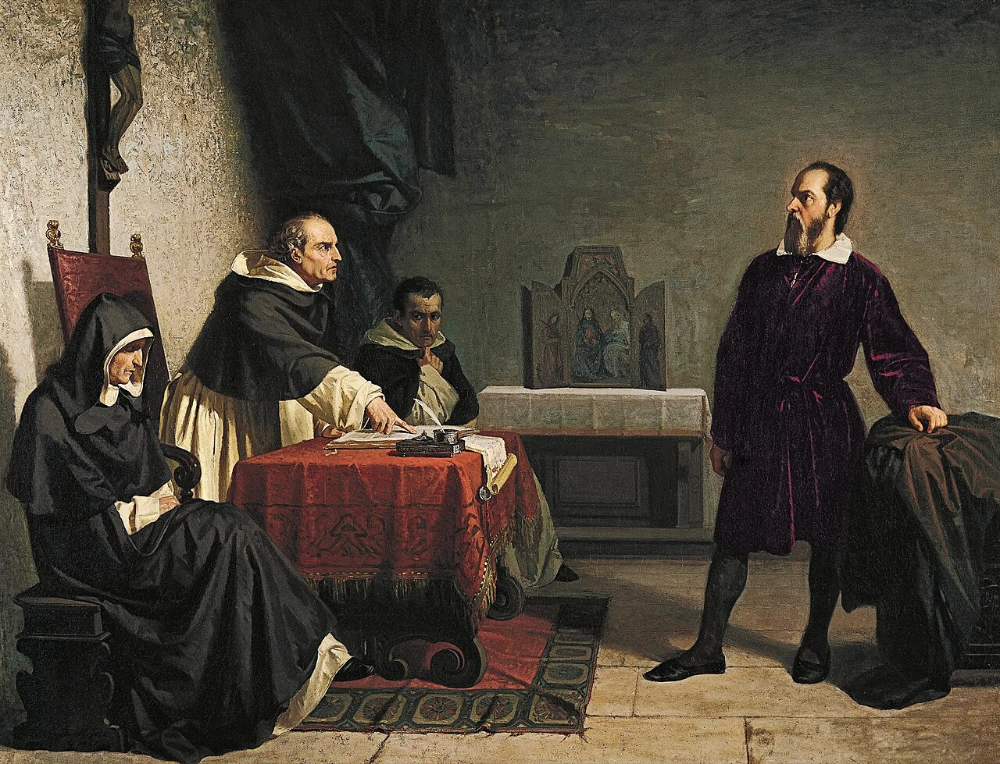
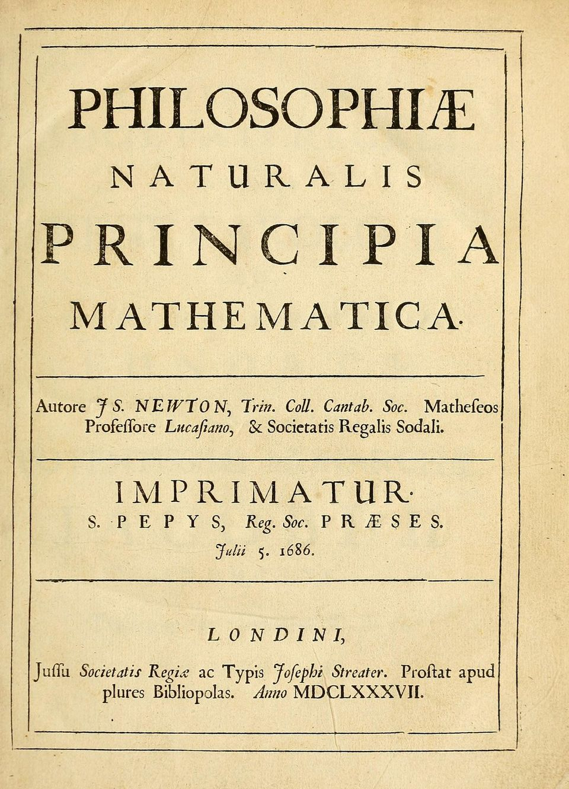

歴史・地理 History & Geography「地球が 回っている」と、 なぜ 言えなかった？ 1992年、ローマ教皇は、地球が動くと唱えたガリレオを罰したのは誤りだったと認めました。けれども当時、地動説には決め手になる証拠がまだなく、天動説のほうも計算ではよく当たっていました。3つの宇宙の模型の図と、証拠がそろうまでの年表で、教会と天文学者それぞれの言い分をたどってみませんか。
2026.11.11 UP 約8分で読める 文：SOMOSOMO編集部
写真（イメージ）：北極星のまわりを回る星の光跡／Youniverse Multiverse（2022年、CC0）
Previously
前回は、江戸の幕府がキリスト教を禁じ、1641年からは、ヨーロッパの国ではプロテスタントのオランダだけに、長崎の出島での商いを許した話でした。それでも長崎・対馬・薩摩・松前の「4つの口」で、外とのつながりは続いていました。
バチカン、1992年10月31日。ローマ教皇ヨハネ・パウロ2世は、学者たちを前に、ある古い裁判について語りました。地球が太陽のまわりを回ると唱えた天文学者ガリレオ・ガリレイを、異端審問所（教会の正しい教えにそむく者を調べ、裁く役所）が罰したのは誤りだった、と認めたのです。
1633年の裁判から359年。いまでは、地球が太陽のまわりを回っていることを、小学生でも知っています。扉の写真で星が円をえがいて見えるのも、地球が回っているからです。けれども17世紀のヨーロッパでは、それをはっきり言うことが許されませんでした。
よく聞く答えは、教会が科学を押さえつけたから、というものです。ただ、話はそれだけではありません。「地球が回っている」と、なぜ言えなかったのでしょうか 。
In a word
地球が動く証拠がまだなく 、教会は聖書の読み方 を譲らなかったから。
01
The Dedication
地動説の本は、 教皇に ささげられていた
話は1543年、バルト海に面したポーランドの町フロムボルクから始まります。大聖堂に仕える聖職者だったコペルニクスが、5月24日に70歳で亡くなりました。その直前、彼の本『天球回転論』が、ドイツのニュルンベルクで刷り上がっていました。
それまでヨーロッパで使われていたのは、第11話で世界図を描いた2世紀の学者プトレマイオスが、天文学の本にまとめた天動説です。地球が宇宙の真ん中で止まっていて、太陽も月も惑星も、そのまわりを回る、という考えです。
天動説は、ときどき夜空を逆向きに進む惑星の動きを、大きな円の上を回る小さな円（周転円）で説明しました。こみ入ってはいても、暦や星の表のもとになるほど、計算には役立ちました。
コペルニクスは、真ん中に太陽を置き、地球をほかの惑星と同じように太陽のまわりで回らせました。地球は1日に1回まわり（自転）、1年で太陽を1周する（公転）。ただし彼も、惑星は円をえがき、周転円も使うという古い前提は残しています。計算の当たり方は、天動説とあまり変わりませんでした。

『天球回転論』の宇宙の図 ベルギーのリエージュ大学の図書館にある『天球回転論』です。左のページの同心円の真ん中にあるのは、太陽（Sol）。余白には、手書きの数字やメモがびっしり並び、熱心に読まれた跡が残ります。写真：Nicolai Copernici Torinensis De revolutionibus orbium coelestium ／J. Donvil（2016年、パブリックドメイン）
本の始めには、教皇パウルス3世にささげることばが置かれていました。地動説で計算が正確になれば、教会が暦を直す助けにもなる、とコペルニクスは書いています。
刷るのを手伝ったのは、ルターの大学があったヴィッテンベルク（第22話）から来た、若い数学者レティクスでした。刷る途中で、この説は計算のための仮の考えだ、という署名のない前書きも足されました。
反発もありました。本が出る4年前の1539年、ルターは食事の席で、太陽を止めよと命じたヨシュアの話（旧約聖書）を引き、地動説を退けたと伝えられています。
それでも教会は、この本をすぐには禁じませんでした。『天球回転論』は、このあと70年あまり、天文学者たちのあいだで読まれ続けます。
02
Missing Proof
証拠が 足りなかったのは、 地動説の ほうだった
そのころ、いちばん正確に星を測ったのは、デンマークの貴族ティコ・ブラーエです。1576年、王フレデリク2世からヴェン島（いまはスウェーデン領）をもらい、天文台を建て始めました。望遠鏡が生まれる前の時代に、目と大きな器械だけで、それまでの10倍ほど正確に星の位置を測りました。

ティコの壁の四分儀 1598年のティコの本にある版画です。南北に向けた壁に、半径約2mの真ちゅうの弧を取りつけ、右はしの人物が向かいの穴から星をのぞいて高さを測ります。中央の壁画に描かれているのが、ティコ本人です。右下の助手が時計を読み、左下の助手が書きとめます。写真：Tycho-Brahe-Mural-Quadrant ／作者不明（1598年ごろ、パブリックドメイン）
そのティコが、地動説を退けました。地球が太陽のまわりを回るなら、半年たつと地球は軌道の反対側にいます。そのとき近くの星は、遠くの星にくらべて、少し位置がずれて見えるはずです（年周視差）。顔の前に指を立て、右目と左目で交互に見ると、指が背景の前で左右に動くのと同じです。
ところが、どれだけ正確に測っても、ずれは見つかりませんでした。地動説の側は、星がとても遠いので、ずれが小さすぎて見えないのだ、と答えました。けれどもティコには、それほど遠く、広い空っぽの空間があるとは考えられませんでした。実際、ずれはあまりに小さく、初めて測れたのは1838年のことです。
そこでティコは、第3の模型を考えました。地球は真ん中で止まり、そのまわりを月と太陽が回る。ほかの惑星は、太陽のまわりを回る。地動説の便利なところを取り入れながら、地球は動かさない、という折衷の案です。
1601年にティコがプラハで亡くなると、助手のケプラーは、残された火星の観測が円では合わないことに気づきます。1609年に出した答えは、惑星は少しつぶれた円（楕円）を回り、その真ん中から少しずれた点に太陽がある、というものでした。
計算はずっと正確になりましたが、地球が動く直接の証拠ではありませんでした。
Fig.01 地動説を めぐる おもな舞台 （1543〜1687年）
地中海
北海
バルト海
大西洋
フロムボルク
ヴェン島
プラハ
パドヴァ
ロンドン
ローマ
ニュルンベルク
ヴィッテンベルク
ピサ
フィレンツェ
新しい説や観測が生まれた場所
ガリレオの裁判が開かれた場所
そのほかの話に出る場所
見どころは、地動説をめぐる人と本が、ポーランドからデンマーク、プラハ、イタリア、イングランドまで、国境をこえて行き来していたこと。地図は Natural Earth（パブリックドメイン）から作りました。町の位置はおおよそです。
03
Through the Lens
望遠鏡は 天動説を崩したが、 地動説を 決めきれなかった
同じ1609年、イタリアのパドヴァ大学で数学を教えていたピサ生まれのガリレオは、前の年にオランダで生まれた望遠鏡の話を聞き、自分で作り始めます。やがて、8〜9倍に見える望遠鏡ができあがりました。

ガリレオの望遠鏡の複製 ガリレオの作とされ、いまに残るうちでいちばん古い望遠鏡を写した複製です。アメリカのグリフィス天文台に展示されています。こんな細い筒で、ガリレオは空を変える発見を重ねました。写真：Galileo telescope replica (1) - white bg ／Jim and Rhoda Morris（撮影年不明、パブリックドメイン）
11月30日、ガリレオは望遠鏡を月に向けました。月の表面はなめらかではなく、山や谷がありました。天の世界は完全で変わらない、というアリストテレスの考えに合いません。
年が明けた1610年1月7日には、木星のそばに小さな星を見つけます。見つづけると、それは木星のまわりを回る4つの衛星でした。3月、発見は『星界の報告』という本になりました。


ガリレオが見た月と木星 左は、1610年の『星界の報告』に載ったガリレオの月のスケッチで、光と影の境目がでこぼこに描かれています。右は2019年にアマチュアの望遠鏡で写した木星で、まわりの3つの点が、ガリレオの見つけた4つの衛星のうちの3つです（残る1つのイオは木星に重なっています）。写真：左 Galileo's sketches of the moon ／ガリレオ・ガリレイ（1610年、パブリックドメイン）、右 Jupiter-and-its-moons-amateur ／salamander724（2019年、パブリックドメイン）
大きかったのは、9月から見えた金星の満ち欠けです。金星は月のように、細い三日月から、まるに近い形まで、すべての形を見せました。プトレマイオスの模型では、金星はいつも地球と太陽のあいだにいるので、まるい形にはなりません。天動説の古い形は、ここで成り立たなくなりました。
ところが、ティコの模型でも金星は太陽のまわりを回るので、すべての満ち欠けを見せます。望遠鏡の発見は、ティコの説とは矛盾しませんでした。このあと17世紀の天文学者のあいだでは、ティコの模型が、いちばん広く支持されたとみられます。
1611年には、ローマにあるイエズス会（第22話で見た、カトリックの修道会）の学校の天文学者たちも、ガリレオの観測を自分の目で確かめていました。観測が正しいことは認められても、それで地球が動くことまでは示せなかったのです。
Fig.02 3つの 宇宙の模型と、 観測との合い方
プトレマイオス
コペルニクス
ティコ・ブラーエ
地球が中心
太陽が中心
地球が中心
金星が、まるい形まで満ち欠けするか
しない
する
する
半年で、星の位置がずれるか（年周視差）
ずれない
ずれるはず
ずれない
地球
太陽
金星
赤い字＝当時の観測と合わない
見どころは、ティコの模型だけが、1610年に見えた金星の満ち欠けとも、星の位置がずれないこととも合っていたこと。図は考え方を簡単にしたもので、ほかの惑星は省き、大きさや距離も正確ではありません。
04
The Trial
裁判には、 聖書の読み方と 教皇との 行きちがいが 重なった
争いの火種は、天文学より聖書でした。旧約聖書には、太陽が動き、地球は動かないと読める箇所がいくつもあります。1613年、ガリレオは弟子への手紙で、聖書は信仰と生き方のよりどころで、自然のしくみを教える本ではない、と書きました。
この手紙の写しが、1615年に異端審問所へ届けられます。第22話で見たように、聖書は教会の伝統とともに読むもの、というのがカトリックの立場でした。訴え出た修道士たちは、学者が聖書の読み方を説くことを、トリエント公会議の決まりにそむき、プロテスタントに近いと見ました。
判断を任された枢機卿（教皇を支える高位の聖職者）ベラルミーノの立場は、こうでした。地動説を、計算のための仮の考えとして使うのはかまわない。けれども本当だと主張するなら、はっきりした証明が要る。証明がないうちは、昔からの聖書の読み方を変えてはならない。
1616年2月26日、ガリレオはベラルミーノの屋敷に呼ばれ、地動説の考えを捨てるよう命じられます。3月5日、教会の禁書を決める役所は、『天球回転論』を、直すまで読んではならない本にしました。
風向きが変わったのは1623年です。ガリレオと親しかった枢機卿バルベリーニが、教皇ウルバヌス8世になりました。新しい教皇はガリレオに目をかけます。そして1632年、ガリレオは『天文対話』を出しました。
本は3人が語り合う形で、教皇が入れるよう求めた自分の考えを、ガリレオは天動説の学者シンプリチオに言わせました。イタリア語で、まぬけとも響く名です。
教皇はこのころ三十年戦争（第22話）のさなかで、スペインの枢機卿から、教会を守る力が弱いと責められていました。そこへ、自分が笑い者にされたように読める本が出たのです。

異端審問所の前のガリレオ 1857年に、イタリアの画家バンティが描いた絵です。右に立つのがガリレオで、左の聖職者たちと向き合っています。裁判から200年あまりのちに描かれたもので、実際の様子そのままではありません。写真：Galileo facing the Roman Inquisition ／クリスティアーノ・バンティ（1857年、パブリックドメイン）
1633年6月22日、69歳のガリレオは、1616年の命令にそむき、地動説を持っていた疑いが強いとされました。ガリレオはその考えを捨てると誓わされます。
『天文対話』は禁じられ、これから書く本も含めて、出版が許されなくなります。ガリレオはフィレンツェ近くのアルチェトリの家から出ることを許されないまま（自宅軟禁）、1642年に亡くなりました。
05
Nobody's Word
地球の動きを 認めさせたのは、 法則と 観測だった
裁判のあとも、学者たちは観測と計算を続けました。1660年にロンドンで生まれた王立協会は、「だれの言葉もうのみにするな」を合いことばにしました。
1687年、王立協会の許しを得て、イングランドのニュートンが『プリンキピア』を出します。地上で物を落とす力と、月や惑星を動かす力を、1つの万有引力の法則で説明する本でした。ケプラーが観測から見つけた楕円の法則も、この引力から導かれます。前回の志筑忠雄が日本に紹介したのも、この物理学でした。

『プリンキピア』の初版の扉 1687年にロンドンで刷られた初版です。中ほどの IMPRIMATUR（出版を許す）の下に、王立協会の会長の名と、1686年7月5日の日付があります。写真：Newton's Principia title page ／アイザック・ニュートン（1687年、パブリックドメイン）
地球が動くことは、こうして物理の法則の中に、無理なくおさまりました。直接の証拠も、あとから届きます。1838年には、ドイツのベッセルが、ついに年周視差を測ります。
教会も少しずつ態度を変えました。1758年には、地動説の本をまとめて禁じる決まりを外し、1835年には『天球回転論』と『天文対話』も、禁書の目録から消えます。そして冒頭の1992年、教皇がガリレオの裁判の誤りを認めます。
Fig.03 「地球が動く」が 認められるまで
1543 コペルニクス『天球回転論』1576 ティコの天文台ができ始める1609 ケプラーの楕円の法則1610 木星の衛星、金星の満ち欠け1616 『天球回転論』を一時禁じる1633 ガリレオの裁判1687 ニュートン『プリンキピア』1729 光行差の説明（公転の証拠）
1758 地動説の本の一律の禁止を外す1835 禁書の目録から外す1838 年周視差を初めて測る
1851 フーコーの振り子（自転の証拠）
1992 教皇が裁判の誤りを認める
地球が動くことを示した観測や実験
本・説・教会の動き
見どころは、地球が動くことを示す観測（赤い点）が、どれもガリレオの裁判よりあとに出ていること。年周視差が測れたのは、『天球回転論』から約300年後でした。1851年には、振り子の揺れる向きが少しずつ回ることで、地球の自転が目に見えるようになりました。点の間隔は年数に比例していません。
こうしてみると、「地球が回っている」と言えなかったわけは、1つではありません。地動説には、目で確かめられる決め手がまだなく、ティコの模型という逃げ道もありました。教会は、証明のない説のために聖書の読み方を変えることを拒みました。そこに、教皇とガリレオの行きちがいと、宗派が争う時代が重なりました。
言えなかったのは、地球が動く証拠と、それを聞き入れる側の用意が、どちらもまだそろっていなかったからです 。
06
By the Numbers
数字で見る 地動説
1,400年 16世紀まで、プトレマイオスの天動説が、ヨーロッパの天文学の標準だった年月。それだけ長く、計算の役に立ってきたCopernican heliocentrism（Wikipedia）による
700倍 星は、太陽から土星までの少なくとも700倍遠くになければならない、というティコの計算。ありえない遠さだと考えたTychonic system（Wikipedia）による
0.314秒 1838年にベッセルが測った、はくちょう座61番星の年周視差。1秒は1度の3,600分の1で、ティコの観測の精度（約1分＝60秒）の約190分の1しかないTychonic system（Wikipedia）による。190分の1は編集部の計算
Here's the Fun Part
ここが面白い！ガリレオの 「決め手」は、 まちがっていた
ベラルミーノが求めた「本当の証明」として、ガリレオが『天文対話』で決め手にしたのが、潮の満ち引きでした。
ガリレオの説はこうです。地球が自転しながら公転すると、地面のそれぞれの場所は、速くなったり遅くなったりする。その揺れで、海の水がゆすられる。ところがこの説明では、満潮は1日に1回になってしまいます。
ガリレオは、月が潮を起こすという昔からの考えを、同じ考えのケプラーごと退けていました。いまの潮の説明のもとになったのは、その月の考えのほうです。月の引力で、海は月の側とその反対側の2か所でふくらむので、満潮は1日に2回来ます。
1687年の『プリンキピア』は、月と太陽の引力で潮を説明しようとしました。正しかった地動説を、ガリレオはまちがった証拠で支えようとしていたことになります 。
次に天気予報のアプリの潮見表を見たら、満潮が1日に2回あることを確かめてみてください。その2回目の満潮が、ガリレオの決め手を崩し、ニュートンの引力を裏づけています。
To be continued
『プリンキピア』の2年後、理性で社会を考える啓蒙思想の哲学者ロックは、人は生まれつき生命・自由・財産の権利を持つと説きました。モンテスキューやルソーも続きます。その考えは海をこえ、1776年の独立宣言や、のちの合衆国憲法に生かされました。王さまのいない国は、どうやって生まれたのでしょうか。
出典・参考
Galileo affair （Wikipedia 英語版）：1633年6月22日の判決（地動説を持ち守った強い異端の疑い）と自宅軟禁、1613年のカステッリへの手紙が1615年に異端審問所へ届けられたこと、ベラルミーノの立場（仮説としてならよいが、本当だとするなら証明が要る）、1616年2月26日の命令、1623年のウルバヌス8世の即位とガリレオへの好意、1632年の『天文対話』とシンプリチオ、教皇の考えをシンプリチオに言わせたこと、スペインの枢機卿の批判、出版の禁止、アルチェトリ、1611年にイエズス会のローマ学院の天文学者が観測を確かめたこと、1758年の禁止の解除、直接の証拠（ニュートン力学、光行差、年周視差）Galileo Galilei （Wikipedia 英語版）：1564年2月15日にピサで生まれたこと、1592〜1610年のパドヴァ大学、1608年のオランダの望遠鏡、8〜9倍の望遠鏡、11月30日に月を見たこと、1610年1月7日の木星の衛星、3月の『星界の報告』、9月からの金星の満ち欠け、聖書は信仰と道徳のよりどころで科学ではないという手紙、潮の説（1日1回の満潮、月の説を退けたこと）、1642年1月8日の死、1992年10月31日のヨハネ・パウロ2世Dialogue Concerning the Two Chief World Systems （Wikipedia 英語版）：3人の語り手、潮の説が地球の動きの証明としては失敗だったことNicolaus Copernicus ・De revolutionibus orbium coelestium （Wikipedia 英語版）：フロムボルクの大聖堂の聖職者、1543年5月24日に70歳で亡くなったこと、ニュルンベルクでの印刷、ヴィッテンベルクのレティクス、オジアンダーの署名のない前書き、教皇パウルス3世への献辞と暦の改良、1539年6月4日のルターの食卓での発言（ヨシュア）、1616年3月5日の禁書の決定と1758年の解除、計算の当たり方が天動説とほぼ同じだったことCopernican heliocentrism （Wikipedia 英語版）：16世紀までの1,400年間のプトレマイオスの体系（数字の欄）、周転円、コペルニクスも円と周転円を残したこと、1616年の決定で直す中身（事実としての書き方を仮説に改める）、1758年と1835年の禁書目録Tycho Brahe ・Uraniborg ・Tychonic system （Wikipedia 英語版）：フレデリク2世から得たヴェン島、1576年の礎石、それまでの10倍の精度（約1分）、年周視差が見えないことと土星の外の大きな空っぽの空間への疑い、ティコの模型、太陽から土星までの700倍という計算（数字の欄）、1838年のベッセルの0.314秒（数字の欄）、1601年10月24日の死Stellar parallax ・Geocentrism （Wikipedia 英語版）：年周視差が19世紀まで見えず、地動説への反論に使われたこと、1838年にベッセルがはくちょう座61番星で測ったことScientific Revolution （Wikipedia 英語版）：ニュートンの万有引力が地上と天の力学を1つにしたことJohannes Kepler ・Kepler's laws of planetary motion （Wikipedia 英語版）：ティコの助手、火星の観測、1609年の『新天文学』、楕円の法則（太陽は楕円の焦点にある）Phases of Venus （Wikipedia 英語版）：金星の満ち欠けがプトレマイオスの模型を否定し、コペルニクスとティコの模型とは合ったことPope Urban VIII （Wikipedia 英語版）：はじめはガリレオと親しかったこと、在位が三十年戦争と重なったことRoyal Society （Wikipedia 英語版）：1660年11月28日のロンドンのグレシャム・カレッジでの会合、合いことば Nullius in verba（だれの言葉もうのみにするな）Philosophiæ Naturalis Principia Mathematica （Wikipedia 英語版）：1686年7月5日の王立協会の出版の許し、1687年の初版、万有引力、ケプラーの法則の説明、月と太陽による潮の説明Aberration (astronomy) ・Foucault pendulum （Wikipedia 英語版）：1729年のブラッドリーの説明（地球の公転と光の速さ）、1851年のフーコーの振り子（自転の直接の証拠）Age of Enlightenment （Wikipedia 英語版）：科学革命の上に啓蒙思想が生まれたこと、1689年のロックの『統治二論』と生命・自由・財産の権利、1748年のモンテスキュー『法の精神』と権力の分立、1762年のルソー『社会契約論』、ジェファソンが独立宣言に啓蒙の理想を取り入れたこと（次の話へ）地図（Fig.01）：Natural Earth （パブリックドメイン）の海岸線から作成。町の位置はおおよそ
写真：CC0 またはパブリックドメイン。扉は北極星のまわりを回る星の光跡（Star stack Star trail ／Youniverse Multiverse、2022年、CC0。バングラデシュで108枚の長時間露光を重ねたもの）。本文中の写真のクレジットは、それぞれの写真の下に記しています